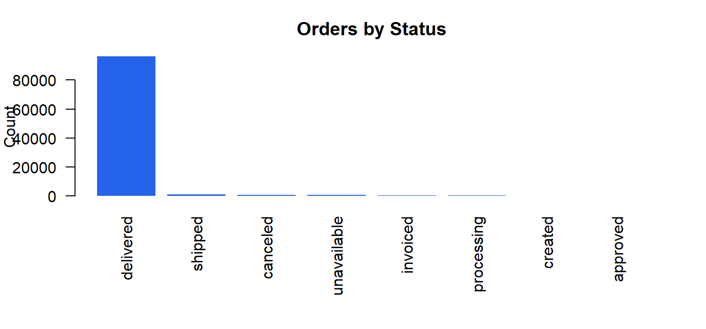
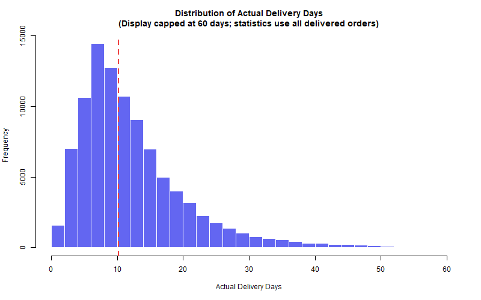

Explore Orders
Skill 1 — Order economics and delivery performance
Business Question
What do order value, freight cost, delivery time, order status, and late-delivery patterns look like in the Olist order-level dataset?
99,441
Total Orders
All processed orders
R$ 105.29
Median Payment
Typical order value
10.22 days
Median Delivery
Completed orders
8.11%
Late-Delivery Rate
Delivered orders
Typical Order Value
Median: R$ 105.29
Mean: R$ 160.99
Typical Freight Cost
Median: R$ 17.09
Mean: R$ 22.65
Delivery Time
Median: 10.22 days
Mean: 12.56 days
Payment Distribution

Order Status Mix
Delivery Time Distribution

Late vs. On-Time Deliveries

Main Findings
- 99,441 total orders; 97.02% delivered.
- Typical order value is R$ 105.29 (median), above the mean because high-value orders pull the average up.
- Typical freight is R$ 17.09; median delivery time is 10.22 days.
- Late-delivery rate is 8.11% among completed orders with valid delivery durations.
Practical Interpretation
Use medians for customer-facing benchmarks. Track missing delivery dates alongside late deliveries because both affect service reporting quality.
Delivery metrics describe successful fulfillment, not the full order lifecycle. Means are inflated by extreme orders.
Technical method and validation
Descriptive statistics are computed from the processed order-level dataset. Required variables are validated before analysis.
| Variable | Missing_Count |
|---|---|
| total_payment_value | 0 |
| total_freight_value | 0 |
| actual_delivery_days | 2965 |
| delivery_delay_days | 2965 |
| late_delivery | 2965 |
| completed_order | 0 |
| canceled_or_unavailable | 0 |
| order_status | 0 |
| seller_count | 0 |
| single_seller_order | 0 |